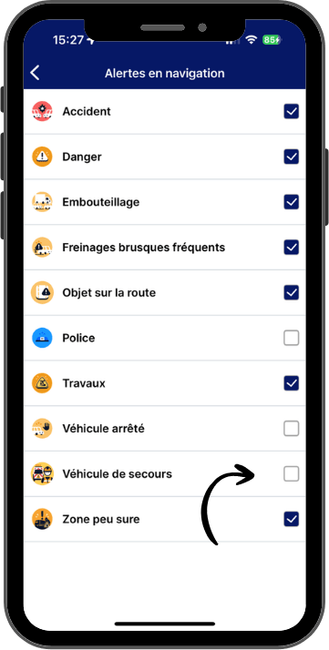
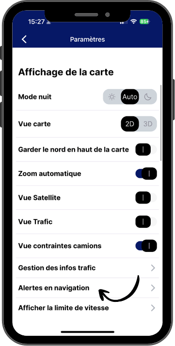

Choose your navigation alerts!

Navigation alertsAccidentHazardTraffic JamFrequent harsh brakingObject on roadPoliceRoadworksStopped vehicleEmergency VehicleUnsafe area
1
Open Settings
then “Navigation alerts”

SettingsMap displayNight modeMap viewKeep north at the top of the mapAutomatic zoomSatellite ViewTraffic ViewTruck constraints viewTraffic info managementNavigation alertsDisplay the speed limit
2
Tick the alerts you want to keep
police, accidents, hazards…
Navigation alertsAccidentHazardTraffic JamFrequent harsh brakingObject on roadPoliceRoadworksStopped vehicleEmergency VehicleUnsafe area✓